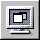

PATH
WebObjects 4.0 Documentation >
WebObjects Tools and Techniques
 Table of Contents
Table of Contents  Previous Section
Previous Section
Launching Your Application
To launch your application:
- Click
 in the toolbar to open the Launch panel.
in the toolbar to open the Launch panel.
- Click  in the Launch panel to launch your application.
When you launch your application, your machine's web browser is launched by default and it accesses your application. To turn off this feature:
- Click
 to bring up the Launch Options panel.
to bring up the Launch Options panel.
- Select Environment and Command-Line Arguments from the pop-up menus.
- Enter -browser OFF as a command line option.
You can also launch your application directly from a command line. See Serving WebObjects for more information on command line options.
You can also launch your application by double-clicking its executable file. When you build your application, Project Builder creates an executable file (ProjectName.exe on Windows NT platforms) inside your application wrapper (.woa) directory.
Table of Contents  Next Section
Next Section